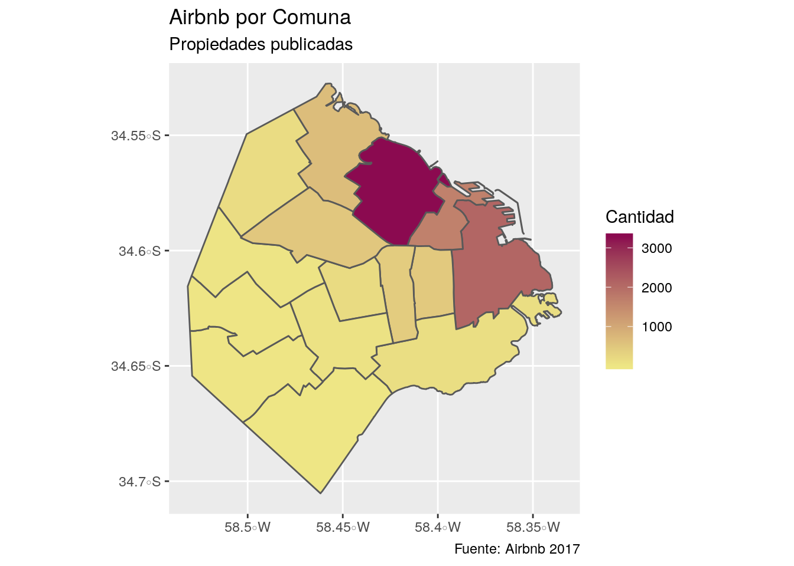

Capítulo 2 Geoprocesamiento
Cuando tenemos información geográfica y queremos manipularla para generar nuevos datos que nos permitan hacer análisis espaciales, debemos utilizar diferentes herramientas de geoprocesamiento.
Los geoprocesos son operaciones que se con capas geográficas, que para nosotros toman la forma de dataframes espaciales. Algunas de estas operaciones se aplican a una sola capa geográfica (como agregar un área de influencia alrededor de un polígono), y otras a varias (como calcular la interseción entre una línea y in porlígono, o estimar la distancia entre dos puntos). Existen operaciones para unir, recortar, disolver, borrar, fusionar, interseccionar, y calcular áreas de influencia (llamadas buffers), entre otras. En este capítulo aprenderemos a usar varias de ellas, incluidas en el paquete sf.
2.1 Cruces espaciales
Hay ocasiones en que necesitamos cruzar datos de fuentes distintas en base a su ubicación geográfica. Es decir, un “join” que cruce registros en base a sus coordenadas espaciales, en lugar de otros atributos.
Aquí va un ejemplo como guía para realizar el spatial join, o join espacial, que sólo puede ser realizado entre dataframes de tipo espacial.
Paquetes que vamos a usar:
2.2 Dataframes tradicionales y dataframes espaciales
Vamos a trabajar con dos datasets.
Uno contiene los alojamientos ofrecidos por Airbnb en Buenos Aires en Julio 2017.
airbnb <- read.csv("https://query.data.world/s/55amvafrknrgkeyeiu54yb2c6u6brc",
stringsAsFactors = FALSE)
names(airbnb)## [1] "room_id" "host_id" "room_type"
## [4] "country" "city" "neighborhood"
## [7] "address" "reviews" "overall_satisfaction"
## [10] "accommodates" "bedrooms" "bathrooms"
## [13] "price" "deleted" "minstay"
## [16] "last_modified" "latitude" "longitude"
## [19] "survey_id" "location" "coworker_hosted"
## [22] "extra_host_languages" "name" "property_type"
## [25] "currency" "rate_type"Y el otro contiene los polígonos de las comunas porteñas:
## Reading layer `CABA_comunas' from data source `https://bitsandbricks.github.io/data/CABA_comunas.geojson' using driver `GeoJSON'
## Simple feature collection with 15 features and 4 fields
## geometry type: MULTIPOLYGON
## dimension: XY
## bbox: xmin: -58.53152 ymin: -34.70529 xmax: -58.33514 ymax: -34.52754
## epsg (SRID): 4326
## proj4string: +proj=longlat +datum=WGS84 +no_defsNotemos que tenemos dos tipos de dataframe distintos. El de Airbnb es un dataframe “tradicional”, dado que todas sus columnas contiene valores simples: un número, un texto, un factor, etc.
El dataframe de comunas es especial porque es “espacial”. Contiene una columna distinta a las demás, llamada “geometry” que en lugar de una observación simple contiene una lista con múltiples posiciones. Estas posiciones son los vértices que definen el polígono de cada comuna, y permiten la proyección en mapas y el cálculo de estadísticas espaciales.
2.2.1 Combinando datasets con información espacial
Si lo único que queremos es visualizar en forma combinada la información que contienen, no hay problema en que un dataframe sea espacial y otro no, siempre y cuando éste último incluya una columna con latitud y otra con longitud para identificar la posición de cada registro.
Dado que los datos de Airbnb incluyen lat/long, es fácil visualizarlos en conjunto con el dataframe espacial de las comunas:
ggplot() +
geom_sf(data = comunas) +
geom_point(data = airbnb,
aes(x = longitude, y = latitude),
alpha = .3,
color = "orange")Dicho esto, si lo que queremos es combinar la información para su análisis cuantitativo, no nos alcanza con la visualización. Lo que tenemos que hacer es un “join espacial”, la técnica que permite cruzar datasets en base a sus atributos de ubicación geográfica.
Sólo es posible hacer joins espaciales entre dataframes espaciales. Es por eso que los datos de Airbnb, así como están, no sirven para un join. ¡Pero! una vez más, dado que incluyen columnas de latitud y longitud, la solución es fácil. Podemos usar las columnas de lat/long para convertirlo en un dataset espacial hecho y derecho, así:
airbnb <- airbnb %>%
filter(!is.na(latitude), !is.na(longitude)) %>%
st_as_sf(coords = c("longitude", "latitude"), crs = 4326)Tres cosas importantes a tener en cuenta:
- Un dataframe espacial no permite filas sin posición (sin coordenadas). Por eso antes de la conversión usamos filter(!is.na(latitude), !is.na(longitude)) para descartar los registros sin coordenadas del dataset de origen si los hubiera.
- La función st_as_sf() es la que toma un dataframe común y lo transforma en uno espacial. Con el parámetro coords = c(“longitude”, “latitude”) le definimos como se llaman las columnas de longitud y latitud, en ese orden. Obsérvese que toma los nombres entre comillas.
- El último parámetro, “crs”, es obligatorio y requiere el identificador del sistema de referencia de las coordenadas. Cuando se trata de datos capturados en internet (como aquí, por scraping del sitio de Airbnb), el crs siempre es 4326. Ahora que ambos dataframes son de tipo espacial, ambos se grafican con geom_sf()
y más importante aún, se pueden combinar con un join espacial. La versión más simple, que combina atributos de las filas cuyas posiciones coinciden en el espacio, es así:
El resultado es un dataframe con datos de Airbnb, que en cada fila incluye los datos de la comuna con la que coincide el alojamiento:
## Simple feature collection with 6 features and 28 fields
## geometry type: POINT
## dimension: XY
## bbox: xmin: -58.41829 ymin: -34.62068 xmax: -58.37914 ymax: -34.59101
## epsg (SRID): 4326
## proj4string: +proj=longlat +datum=WGS84 +no_defs
## room_id host_id room_type country city neighborhood
## 1 15125458 95870458 Private room NA NA NA
## 2 1691316 3380366 Private room NA NA NA
## 3 16069975 104686791 Private room NA NA NA
## 4 4470484 2034113 Private room NA NA NA
## 5 3564816 17949594 Private room NA NA NA
## 6 4479962 8875440 Private room NA NA NA
## address reviews overall_satisfaction accommodates bedrooms
## 1 Recoleta, Buenos Aires 23 4.5 1 1
## 2 Palermo, Buenos Aires 106 5.0 2 1
## 3 Recoleta, Buenos Aires 5 5.0 1 1
## 4 Buenos Aires 102 4.5 2 1
## 5 San Nicolás, Buenos Aires 20 4.5 1 1
## 6 Balvanera, Буэнос-Айрес 102 4.5 2 1
## bathrooms price deleted minstay last_modified survey_id
## 1 NA 339 0 NA 2017-07-03T17:52:23Z 1
## 2 NA 559 0 NA 2017-07-03T17:52:26Z 1
## 3 NA 254 0 NA 2017-07-03T17:52:26Z 1
## 4 NA 441 0 NA 2017-07-03T17:52:26Z 1
## 5 NA 390 0 NA 2017-07-03T17:52:26Z 1
## 6 NA 424 0 NA 2017-07-03T17:52:26Z 1
## location coworker_hosted
## 1 0101000020E61000000FB743C362324DC0B1DEA815A64B41C0 NA
## 2 0101000020E6100000780E65A88A354DC08A027D224F4C41C0 NA
## 3 0101000020E610000002D4D4B2B5324DC0B5C2F4BD864C41C0 NA
## 4 0101000020E6100000187C9A9317314DC04293C492724F41C0 NA
## 5 0101000020E61000004FC939B187304DC03D29931ADA4C41C0 NA
## 6 0101000020E6100000A6272CF180324DC0A88FC01F7E4E41C0 NA
## extra_host_languages name property_type
## 1 {en} Habitacion privada en Recoleta Apartment
## 2 {en} Palermo Cozy room wprivate bathroom House
## 3 {en} Habitacion Recoleta, Confort Condominium
## 4 {} The Flan Room- Palacio Nr San Telmo House
## 5 {en} "Antique" room @ El Centro Apartment
## 6 {} Private room - Congreso House
## currency rate_type
## 1 ARS nightly
## 2 ARS nightly
## 3 ARS nightly
## 4 ARS nightly
## 5 ARS nightly
## 6 ARS nightly
## barrios
## 1 RECOLETA
## 2 PALERMO
## 3 RECOLETA
## 4 CONSTITUCION - MONSERRAT - PUERTO MADERO - RETIRO - SAN NICOLAS - SAN TELMO
## 5 CONSTITUCION - MONSERRAT - PUERTO MADERO - RETIRO - SAN NICOLAS - SAN TELMO
## 6 BALVANERA - SAN CRISTOBAL
## perimetro area comunas geometry
## 1 21246.61 6140873 2 POINT (-58.39364 -34.59101)
## 2 21768.07 15772496 14 POINT (-58.41829 -34.59616)
## 3 21246.61 6140873 2 POINT (-58.39617 -34.59786)
## 4 35572.65 17802807 1 POINT (-58.38353 -34.62068)
## 5 35572.65 17802807 1 POINT (-58.37914 -34.60041)
## 6 10486.26 6385991 3 POINT (-58.39456 -34.61322)Con los atributos adicionales, podemos realizar sumarios por comuna de los alojamientos:
## Simple feature collection with 16 features and 2 fields
## geometry type: GEOMETRY
## dimension: XY
## bbox: xmin: -58.7976 ymin: -34.82524 xmax: -58.18856 ymax: -34.41952
## epsg (SRID): 4326
## proj4string: +proj=longlat +datum=WGS84 +no_defs
## # A tibble: 16 x 3
## comunas cantidad geometry
## * <fct> <int> <GEOMETRY [°]>
## 1 1 2100 MULTIPOINT (-58.39242 -34.60016, -58.39235 -34.60115, -58.3…
## 2 10 18 MULTIPOINT (-58.52669 -34.62379, -58.52227 -34.61793, -58.5…
## 3 11 34 MULTIPOINT (-58.52372 -34.60679, -58.51784 -34.61295, -58.5…
## 4 12 163 MULTIPOINT (-58.51262 -34.58124, -58.50698 -34.56917, -58.5…
## 5 13 670 MULTIPOINT (-58.47438 -34.53906, -58.47433 -34.55242, -58.4…
## 6 14 3281 MULTIPOINT (-58.44776 -34.56799, -58.44745 -34.56847, -58.4…
## 7 15 500 MULTIPOINT (-58.49529 -34.593, -58.48774 -34.58506, -58.486…
## 8 2 1659 MULTIPOINT (-58.41587 -34.59755, -58.41514 -34.5967, -58.41…
## 9 3 468 MULTIPOINT (-58.41385 -34.61058, -58.41363 -34.60651, -58.4…
## 10 4 136 MULTIPOINT (-58.4205 -34.64693, -58.42022 -34.64792, -58.41…
## 11 5 422 MULTIPOINT (-58.4313 -34.6024, -58.43129 -34.60154, -58.431…
## 12 6 184 MULTIPOINT (-58.45786 -34.60974, -58.45726 -34.61023, -58.4…
## 13 7 62 MULTIPOINT (-58.47123 -34.62169, -58.47018 -34.62031, -58.4…
## 14 8 1 POINT (-58.46999 -34.66616)
## 15 9 15 MULTIPOINT (-58.5287 -34.64678, -58.52213 -34.63636, -58.51…
## 16 <NA> 210 MULTIPOINT (-58.7976 -34.66354, -58.69091 -34.47598, -58.68…El resultado de un join espacial también es un dataframe espacial, así que podemos visualizarlo de la manera habitual (y ahora tenemos más variables para graficar).

2.2.2 Coropletas
Hasta acá obtuvimos un dataframe espacial con la geometría de puntos proveniente de los datos de Airbnb y generamos una nueva columna que indica a que Comuna pertenece cada registro. Sin embargo, cuando tenemos muchos puntos concentrados en un mapa resulta difícil realizar un análisis visual que nos permita sacar conclusiones de los mismos. Para estos casoos sirven los mapas coropléticos, que muestran áreas geográficas (polígonos) coloreadas según alguna de las variables incluidas en el dataset.
Entonces, ¿Cómo podemos hacer un mapa coroplético dándole color cada Comunas según la cantidad de propiedades que se alquilan?
Veamos esto en detalle:
Lo primero que debemos hacer es filtrar solo las propiedades que se ubican dentro de CABA y agruparlas por Comuna calculando la cantidad de observaciones que contiene cada una. Luego tenemos que hacer un left_join() entre el shape original con los polígonos de las Comunas y los datos que agrupamos:
comunas <- comunas %>%
left_join(airbnb_con_comunas %>%
filter(!is.na(comunas)) %>%
group_by(comunas) %>%
summarise(cantidad=n()) %>%
st_set_geometry(NULL),
by="comunas")Ahora sí, ya estamos en condiciones de hacer nuestro primer mapa coroplético a partir de la unión de datos espaciales y no espaciales:
ggplot() +
geom_sf(data = comunas, aes(fill=cantidad)) +
labs(title = "Airbnb por Comuna",
subtitle = "Propiedades publicadas",
fill = "Cantidad",
caption= "Fuente: Airbnb 2017") +
scale_fill_gradient(low="khaki2", high="deeppink4")
Tal como se ve en el mapa, la Comuna 14 donde se encuentra solo el barrio de Palermo es la que más cantidad de propiedades tiene publicadas en Airbnb. Esto tiene sentido ya que Airbnb es un servicio orientado a turistas y Palermo es uno de los barrios donde más cantidad de atracciones turísticas hay.
Sin embargo, para que estos datos sean comparables entre las 15 Comunas, lo correcto sería dividir la cantidad de observaciones por la superficie (ha) de cada una.
ggplot() +
geom_sf(data = comunas, aes(fill=(cantidad/area)*10000)) +
labs(title = "Airbnb por Comuna",
subtitle = "Densidad de propiedades publicadas",
fill = "Cantidad por ha",
caption= "Fuente: Airbnb 2017") +
scale_fill_gradient(low="khaki2", high="deeppink4")
Aquí pudimos ver que los resultados son similares a los del primer mapa coroplético ya que el corredor norte de la Ciudad sigue siendo la zona donde se concentra la mayor parte de la oferta. Pero si tenemos en cuenta la superficie total de las Comunas, la 2 (Recoleta) es la que más densidad de observaciones tiene, seguida por la Comuna 1.
2.3 Uniones
Para unir capas de información geográfica utilizaremos st_union, que tiene 2 funcionalidades:
1. Combina la información de dos capas que se superponen, generando una capa única que contiene la suma de los atributos de ambas. Falta Ejemplo
2. Combina registros de una misma capa, generando una única capa con un solo dato. Veamos un ejemplo de esto donde transformaremos el shape de comunas en un shape con un único polígono del contorno de la Ciudad:

En el mapa se ve que ya no aparecen los límites de las comunas (se disolvieron) y quedó un solo polígono con la forma total de la Ciudad.
Falta Continuar
2.4 Intersecciones
Hacer una intersección entre capas significa que dos geometrías serán recortadas, generando una capa única que contenga solo las entidades que se encuentran superpuestas. Para esto podemos utilizar st_intersection.
Veamos un ejemplo.
¿Cómo podríamos, a partir de un geoproceso, filtrar y quedarnos solo las observaciones pertenecientes a CABA, eliminando las de AMBA?
Podríamos hacer una intersección espacial entre los datos de Airbnb y el shape del contorno de CABA que unimos anteriormente de la siguiente forma:
Grafiquemos el resultado en su contexto:
ggplot()+
geom_sf(data=comunas) +
geom_sf(data=airbnb_con_comunas, size=0.75, alpha = .3, color="dodgerblue3")
Listo, ya tenemos nuestro shape de Airbnb recortado a partir de una intersección espacial. Ahora miremos otros ejemplos de uso de esta herramienta.
Ahora nos quedaremos solo con las observaciones pertenecientes a las Comunas con mayor cantidad de publicaciones a partir de una intersección espacial entre los datos de Airbnb y las Comunas que tienen una cantidad de datos mayor a la media:
airbnb_con_comunas %>%
st_intersection(comunas %>% filter(cantidad>mean(cantidad))) %>%
ggplot() +
geom_sf(data=comunas) +
geom_sf(aes(color=comunas), size=0.4, alpha=0.3) Lo primero que hicimos fue filtrar las comunas que en la columna cantidad tienen un valor mayor al promedio de las 15 comunas, y luego intersectamos estas Comunas con los datos de Airbnb, para quedarnos solo con los pertenecientes a estas.
Lo primero que hicimos fue filtrar las comunas que en la columna cantidad tienen un valor mayor al promedio de las 15 comunas, y luego intersectamos estas Comunas con los datos de Airbnb, para quedarnos solo con los pertenecientes a estas.
Falta Completar
2.5 Distancias
El cálculo de distancias con st_distance es otro de los geoprocesos que vamos a aprender. Esta herramienta es muy útil para realizar análisis espaciales ya que nos permite comprender como se organizan y relacionan entre sí las entidades geográficas. Es decir que, nos permite sumar información a nuestros datos a partir de la relación especial que tienen con otro objeto.
Como los datos que estamos analizando pertenecen a la oferta de alquileres turísticos, calculemos la distancia entre cada una de las propiedades publicadas y los hoteles de la Ciudad, para entender si tienen patrones/comportamientos similares o no. Esto es posible armando una función que nos permita calcular y filtrar la distancia de cada una de las propiedades publicadas en Airbnb al hotel más cercano. Con este análisis intentaremos comprender como es la distribución de la oferta de Airbnb y si tiene alguna relación con la ubicación de los hoteles en la ciudad.
Primero cargamos el dataset de hoteles que está publicado en le portal de datos abiertos de GCBA:
hoteles <- read.csv("http://cdn.buenosaires.gob.ar/datosabiertos/datasets/alojamientos-turisticos/alojamientos-turisticos.csv",
encoding = "UTF-8")Y lo convertimos a shape como ya aprendimos:
hoteles <- hoteles %>%
filter(!is.na(lat), !is.na(long)) %>%
st_as_sf(coords = c("long", "lat"), crs = 4326)Luego creamos una nueva columna en nuestro dataset donde calculamos la distancia de cada propiedad a cada hotel, pero nos quedamos únicamente con la distancia a la estación más cercana.
airbnb_con_comunas <- airbnb_con_comunas %>%
mutate(dist_hotel = apply(st_distance(airbnb_con_comunas, hoteles), 1, function(x) min(x)))Revisemos como se ve la nueva columna:
## Simple feature collection with 6 features and 3 fields
## geometry type: POINT
## dimension: XY
## bbox: xmin: -58.41829 ymin: -34.62068 xmax: -58.37914 ymax: -34.59101
## epsg (SRID): 4326
## proj4string: +proj=longlat +datum=WGS84 +no_defs
## room_type name dist_hotel
## 1 Private room Habitacion privada en Recoleta 142.02029
## 2 Private room Palermo Cozy room wprivate bathroom 162.42654
## 3 Private room Habitacion Recoleta, Confort 116.76407
## 4 Private room The Flan Room- Palacio Nr San Telmo 38.54021
## 5 Private room "Antique" room @ El Centro 90.17597
## 6 Private room Private room - Congreso 203.75457
## geometry
## 1 POINT (-58.39364 -34.59101)
## 2 POINT (-58.41829 -34.59616)
## 3 POINT (-58.39617 -34.59786)
## 4 POINT (-58.38353 -34.62068)
## 5 POINT (-58.37914 -34.60041)
## 6 POINT (-58.39456 -34.61322)Veamos y analicemos el resumen del resultado obtenido:
## Min. 1st Qu. Median Mean 3rd Qu. Max.
## 1.408 91.583 169.227 260.199 318.691 4828.336Acá podemos ver que la mínima distancia entre una propiedad publicada en Airbnb y un hotel es de 1,4 metros y que la máxima es de 4828. Sin embargo, si miramos la media podemos ver que las propiedades se encuentran, en promedio, a 260 metros del hotel más cercano, lo cuál es muy cerca. A priori con estos datos, parecería ser que la localización de los Airbnb está muy relacionada con la de los hoteles.
Visualicemos esto en un histograma para comprender mejor la distribución de los datos:

Se ve como la mayor parte de las observaciones se encuentra a menos de 250 metros de algun hotel.
Por último, veamos esto en un mapa:
airbnb_con_comunas %>%
ggplot() +
geom_sf(data=comunas)+
geom_sf(aes(color=dist_hotel)) +
geom_sf(data=hoteles) +
scale_color_viridis_c(option = "plasma", direction = -1)
En el mapa se ve claramente que la distribución de la oferta de propiedades no es aleatoria, sino que responde a la demanda de los turistas ya que la mayor parte está ubicada cerca de hoteles (puntos negros). Los patrones de los 2 dataset son muy similares: gran concentración de puntos en Recoleta, Retiro y Microcento, extendiéndose hacia el corredor norte y siendo casi nula hacia el sur de la Ciudad.
2.6 Cálculo de extensión (longitud, área)
## Reading layer `barrios_badata' from data source `http://cdn.buenosaires.gob.ar/datosabiertos/datasets/barrios/barrios.geojson' using driver `GeoJSON'
## Simple feature collection with 48 features and 4 fields
## geometry type: POLYGON
## dimension: XY
## bbox: xmin: -58.53152 ymin: -34.70529 xmax: -58.33515 ymax: -34.52649
## epsg (SRID): 4326
## proj4string: +proj=longlat +datum=WGS84 +no_defs